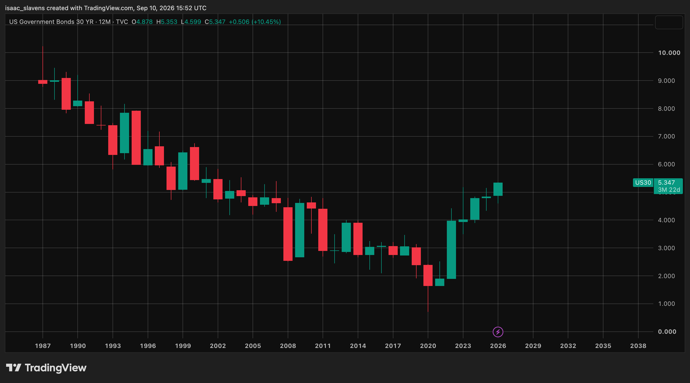
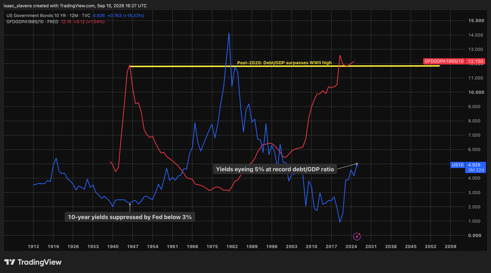
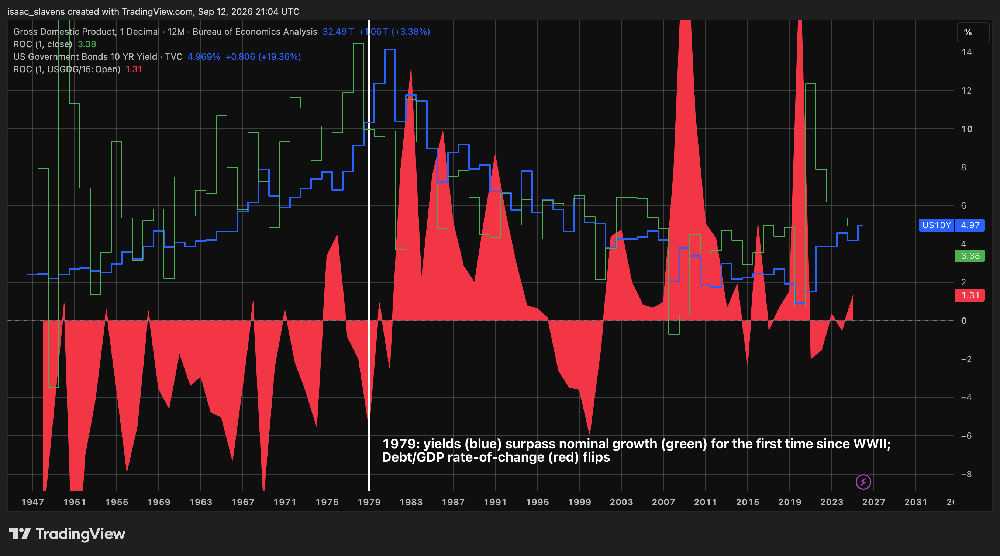

The Federal Reserve's ability to execute monetary policy based on the sole interest of a dual mandate between stable prices and maximum employment ought not to be taken for granted.2 History suggests that it is a luxury afforded by peace and fiscal stability. During times of extreme stress, inflation becomes a necessary evil to allow the government to finance its debt, as the consequences of 20% CPI growth are preferable to those of a debt crisis.
The 1942 fiscal situation resulting from total war forced the Federal Reserve to maintain a short-term interest rate peg at 0.375%.3 This was necessary for the federal government to finance the war, but it also meant that the Fed had no control over its balance sheet, as affordable limitless financing was the only reasonable priority. Once the war ended, the gluttony of the Treasury for cheap financing did not. In 1951, against President Truman's wishes, the Fed announced it would no longer maintain artificially low rates, which restored government financing to a free market.3 For the first time, the Fed was a mature institution alongside a free bond market.
Today, the bond market is shifting from a nuisance to a genuine problem for the Treasury, in which the debt/GDP ratio is higher today than it was at its 1946 peak.4 Once debt management becomes a sufficient problem, the dual mandate for the Federal Reserve shifts from inflation and unemployment, to one between inflation and financing. In other words, the Fed cannot independently manage its policy and balance sheet to sustain 2% inflation when the fiscal implications of doing so would be disastrous, and cause extreme recessionary deflation. It is impossible to predict the future with any degree of confidence or accuracy, but it is productive to consider if the future of American debt management would be possible in an environment where the Fed sustains its independence. Can an unsupported Treasury manage its way out of a 125% debt/GDP ratio4?
Treasury Secretary Scott Bessent is currently in power during an investment boom that sits on thin ice. Each time he makes an effort to suppress the recent breakout in long-term yields, the market shrugs it off. 30-year bonds currently offer a yield of ~5.3%, which is the highest level since 2007.5 Long-term trends point to a nearly unprecedented rise -- 2026 is the 6th year in a row that yields have risen. Since the genesis of this security, its yield has never risen for more than two years in a row since the 1980s.5

After Secretary Bessent announced that the buyback program would be increased from four billion to six billion6, the 10-year yield rose by ~20 bps, as if to send a message that much more demand is required for the party to go on.7 This 20 bps increase alone, if realized in the effective rate, would mean that the U.S. government pays an additional $80 billion in annual interest expenses.8 In contrast to that resultant $80 billion expense, it should be evident why just two billion in additional buybacks was insufficient to pacify the market. The current ~4.9% level of the 10-year yield is anything but arbitrary.7 Breaking out of the post-2008 trading range is historically significant, but what's more important are the implications of current borrowing costs on long-term debt/GDP.

Having established the nature of the debt situation, it is worth considering which factors influence its trajectory, and understand the financial conditions required to bring it back down to a sustainable level. Since the end of WWII, the debt/GDP ratio was consistently shrinking until it flattened around 35% in the mid-1970s.4 The indicator for a reversal in this ratio's trajectory was when the 10-year yield surpassed the rate of nominal economic growth. From the post-war prosperity until the stagflation of the 1970s, the rate of nominal growth was almost double the 10-year treasury yield at times, and on average was well above it.9 The growth rate of the debt/GDP ratio flipped exactly when debt burdens were higher than the GDP year-over-year growth rate. It is also worth noting that the one period since 1979 in which the debt/GDP ratio had a negative first derivative for 2+ years was the late-1990s, which notably coincided with the first intersection between growth and yields since 1979.

In a healthy macroeconomic environment, the state of bond yields and the nominal growth rate will ebb and flow. That one should overtake the other periodically is a "great principle of Undulation in nature, that shows itself in the inspiring and expiring of the breath; in desire and satiety; in the ebb and flow of the sea; in day and night; in heat and cold; and, as yet more deeply ingrained in every atom and every fluid, is known to us under the name of Polarity."10 What Ralph Waldo Emerson points out here is that cyclicality, driven by polarity, is a natural law. Periods of positivity and prosperity will naturally succumb to those of negativity and struggle. In this long-run economy with theoretical responsible spending, the debt/GDP ratio will decline during periods of prosperity, as growth exceeds yields, which are suppressed by increasing wealth and savings. The ratio will rise once again in a healthy manner as the economy cools down, savings get depleted, and the government's interest burdens rise faster than the economy's output increases.
The self-correcting, mean-reverting polarity that played out in the 20th century is contingent primarily on overall systemic health, alongside sustainable levels of government spending. The right end of this chart is proof of that contingency, as the yield/growth correlation with debt/GDP broke in 2008, when the system and the government lost a great deal of their functionality. Nominal growth was reasonably above 10-year yields during the period, but the aggregate level of debt was expanding so rapidly that it did not matter. A vicious cycle began in 2008 which is likely impossible to be reversed by anything short of complete systemic restructuring. The extent of the Federal Reserve's bond purchasing in 2008 and beyond had not happened since the Second World War, except that the emergency necessitating it was internal, rather than external.11 Government spending has been so reckless since 2008 (largely driven by a separate vicious cycle of perverse incentives) that the United States has now missed its opportunity to experience an organic fiscal recovery.
After about 30 years with nominal growth exceeding yields, largely driven by quantitative easing and the post-GFC global savings glut12, 1979 is around the corner. I have covered the topic of bond yields and their future extensively in other articles, so I hope it will suffice within this article to point out the fact that the bond market's long-term decline post-1980s has reversed. With yields at their highest level since 2007, they are catching up to the nominal growth rate. If history is any indicator, this represents the beginning of a long-term environment of fiscal stress. Now that the long-term window in which to reduce the debt/GDP ratio is about to close, the environment ahead is unprecedented.
It is hard to imagine how a recovery without any rate suppression is realistic. When it comes to realizing the consequences of a system of broken spending incentives, we are still at the top of the first inning. As the math behind this fiscal situation continues to play out, it puts a ticking clock on a free bond market. The Treasury's tools are limited, and with the bond market scoffing at Scott Bessent's buybacks thus far, this situation will likely end only with the help of the Federal Reserve recapturing the bond market as it did in 1942.3 Ultimately, the bond market will decide how this situation plays out, even if that means it decides it can't govern itself any longer.